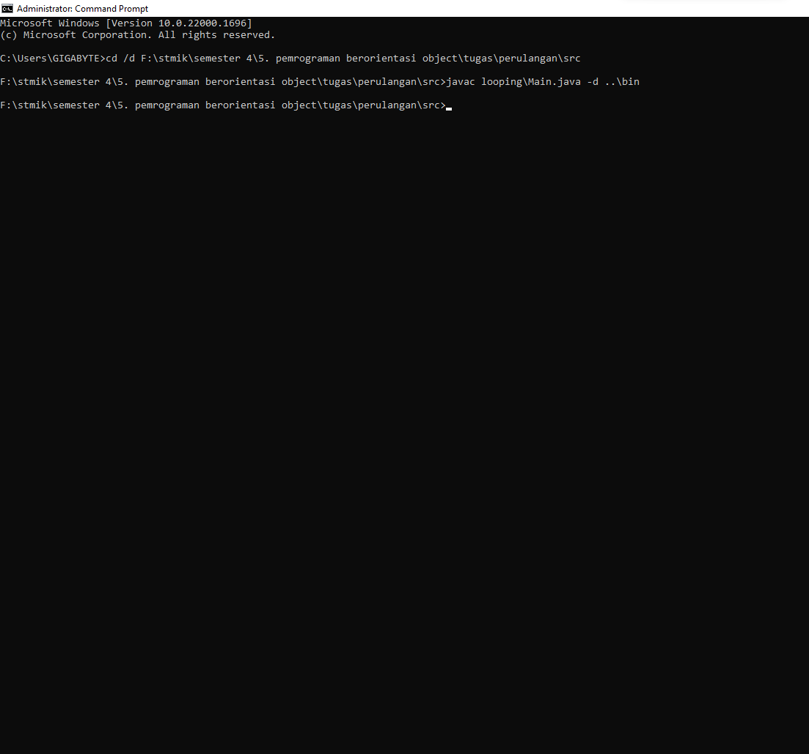
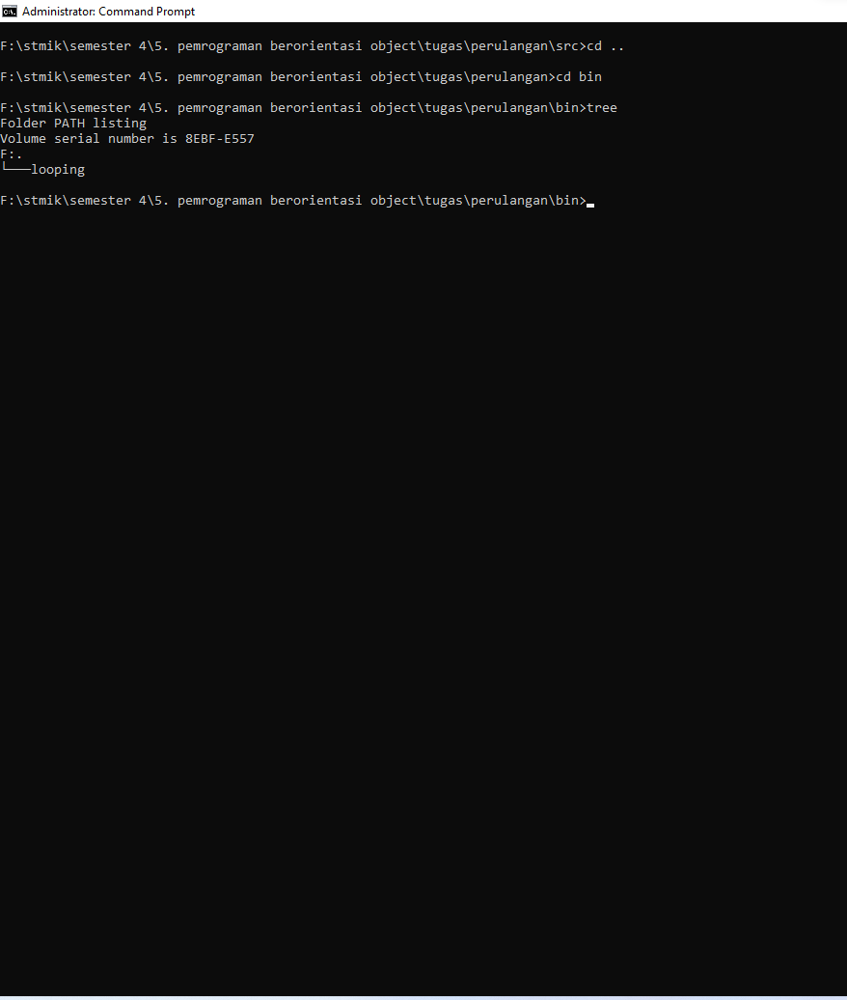
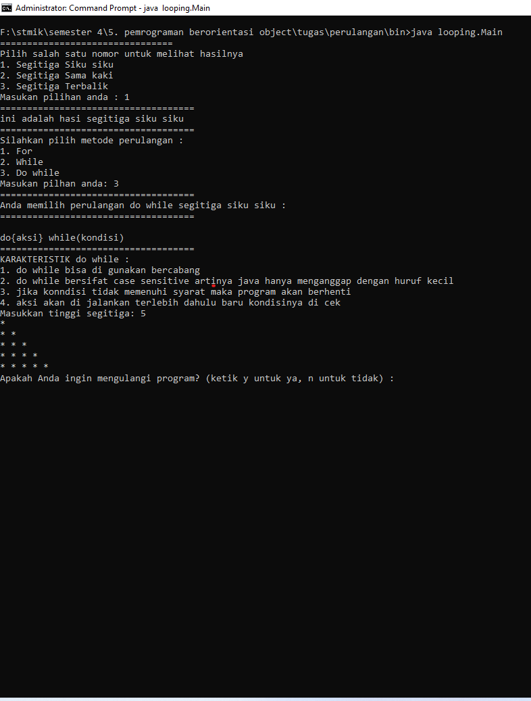
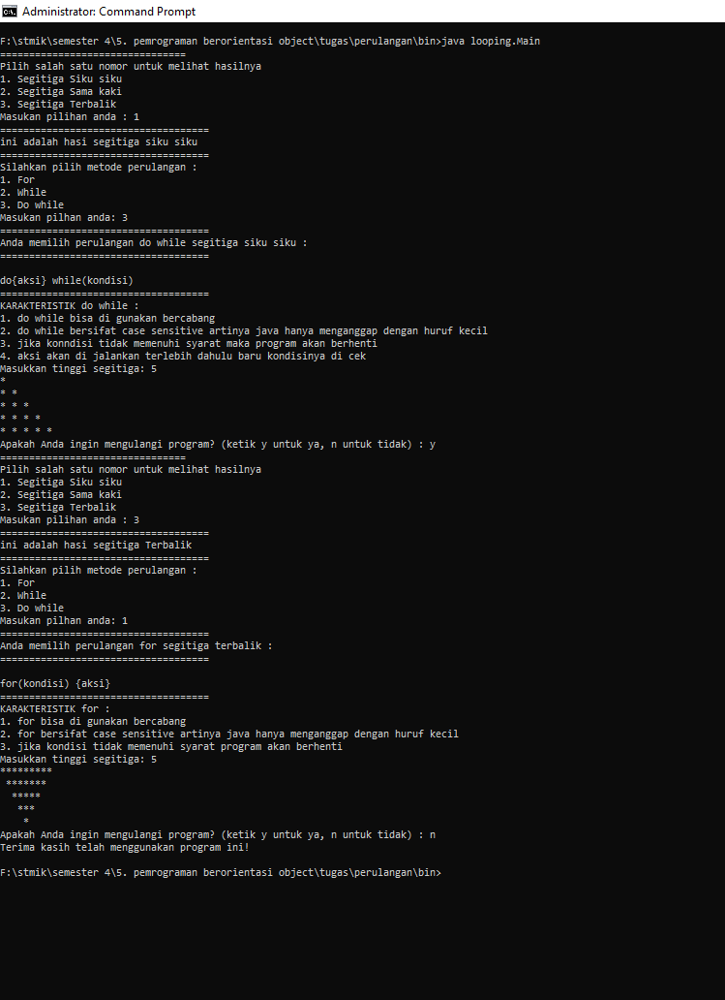
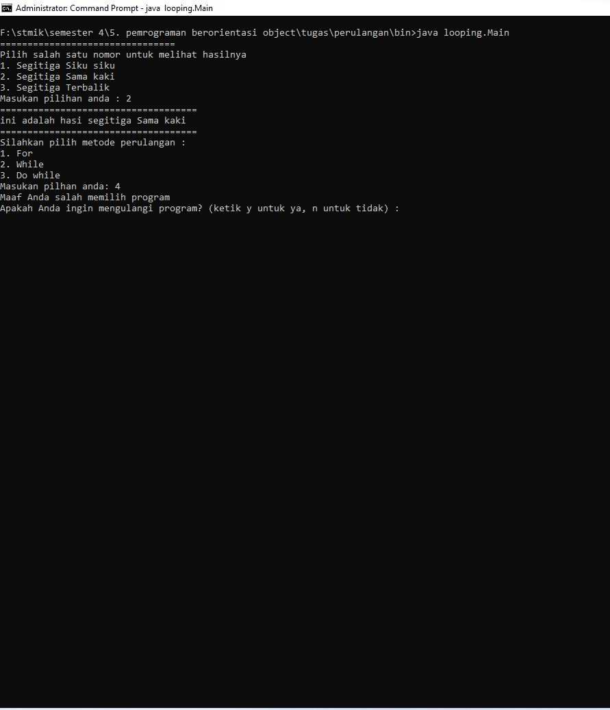

Pembuatan aplikasi percabangan (if) dan looping (for, while, do while)
Nama : Irvan al rasyid
Npm : 10822130
Kelas : LJT-22/204
Matkul : pemrograman Berorientasi Object /Java
Program
ouput
klik gambar untuk full screen
-
1.) langkah pertama compile source code java dengan terminak bawaan(CMD, git-bash, power-shell atau yang lainnya). Bisa juga menggunakan IDE netbeans!

-
2.) langkah kedua run atau jalankan programnya dengan mengetikan sintaks java Main.java untuk menggunakan terminal, untuk IDE netbeans tinggal klik gambar run di bagian headbar
untuk menjalankannya ikuti cara berikut ini :

-
3.) Berikut tampilan program ketika di jalankan, pada kasus ini saya memilih 1. segitiga siku siku kemudian menggunakan do while yang menghasilkan looping segitiga siku siku
dan ketika program selesai maka akan diberikan pilihan y untuk ya dan melanjutkan programnya dan n untuk tidak melanjutkan programnya

-
4.) berikut ini jika mengulang program di sini saya memilih 3. segitiga terbalik dan menggunakan for sebagai looping perulangan setelah itu saya akan mengetikan n untuk close program
atau mengakhiri program !

-
5.) berikut jika program salah di ketikan atau user salah memasukan angka, maka akan menampilkan pesan "Maaf anda salah memilih program" dan di bawahnya akan menampilkan opsi untuk melanjutkan atau tidak
